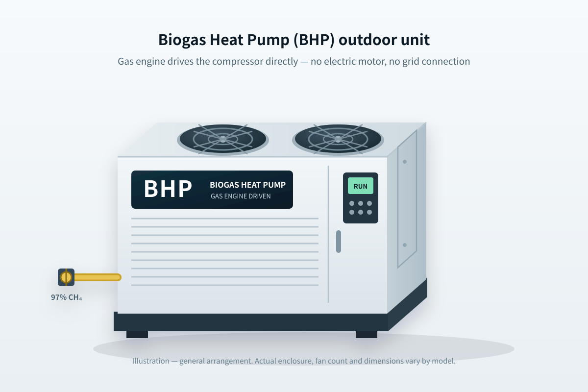
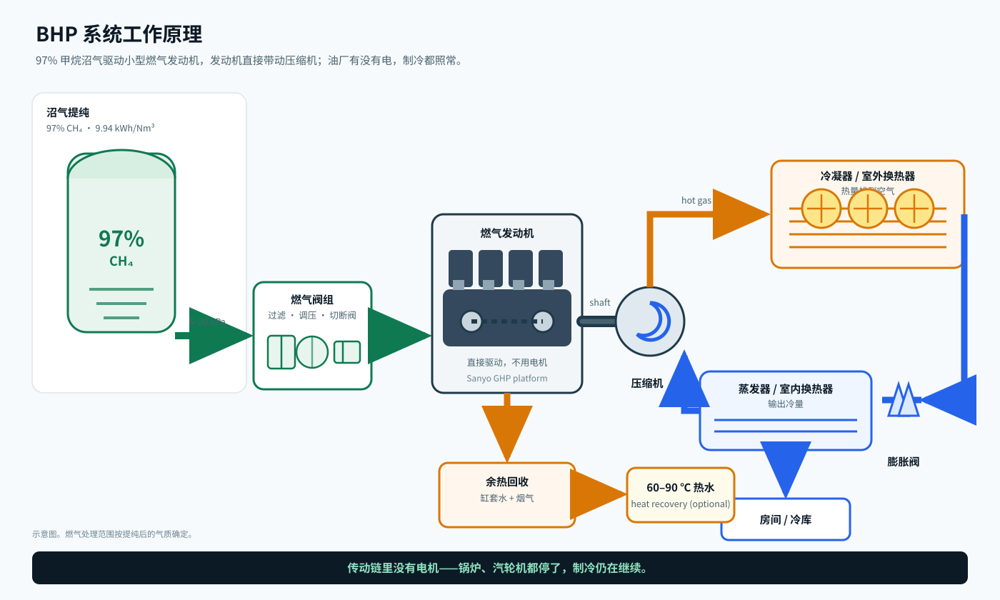

01 · 成熟架构
是发动机，不是吸收式
同样进气量，机械压缩的冷量约为单效吸收式的 1.5 倍；没有溴化锂、没有腐蚀回路、没有结晶风险。
沼气热泵空调（BHP）· 30–480 kW
油厂的空调通常挂在一根脊柱上：锅炉 → 汽轮机 → 厂用电 → 电空调。锅炉一停，办公室、化验室、员工宿舍马上变成蒸笼——偏偏是厂里最需要它们的时候。BHP 系统把这条依赖切断：小型燃气发动机直接驱动压缩机，燃料是油厂自己的沼气提纯出来的 97% 甲烷。传动链里没有电机，不接电网，也不用柴油。
单点故障
这条链决定油厂当天有没有空调。每一环都依赖上一环——不是电，就是汽。
BHP 的链条

整机
发动机、压缩机、冷凝器、燃气阀组、启动电池和控制器全部在一个撬块上，出厂前跑合测试。到场放到基础上，接燃气管、冷冻水或制冷剂管，再加一根控制线。不需要电机控制柜、不需要软启动、不用增容变压器。
工作原理
发动机对压缩机做机械功——它不是吸收式冷水机。所以 1 方甲烷约出 10 度冷量，比同样气量进单效吸收式机组大约多 50%。

这里标的 COP 是按燃气低热值算的，日本评燃气热泵就用这个口径。若按电等效看，压缩机本身的 COP 约 3.0，和好的电空调一样；变的是轴功从哪来。
技术来源
燃气发动机热泵由原日本三洋空调事业部开发并产业化，中国同类机型由大连中智精工（Sino-Tech）制造。BHP 沿用这套成熟的机械架构——燃气机、开式压缩机、发动机余热回收——把燃料系统重新适配到棕榈油厂废料提纯的 97% 生物天然气。
01 · 成熟架构
同样进气量，机械压缩的冷量约为单效吸收式的 1.5 倍；没有溴化锂、没有腐蚀回路、没有结晶风险。
02 · 我们改了什么
燃气阀组按 97% 甲烷选型；空燃比与点火时刻重新标定；针对甲烷值波动做爆震控制与功率修正；油品与保养周期按沼气机。
03 · 没变的部分
工业级往复机、开式压缩机、铜管铝翅片盘管、全面前保养。20,000–30,000 小时大修，设计寿命 15 年。
同类参考机型包括松下 GHP 室外机与大连中智精工（Sino-Tech）燃气热泵机组。BHP 是我们做沼气适配的成套产品；本页性能数据为参考值，每个项目以厂家保证书为准。
机型
燃料输入为额定制冷量、甲烷低热值 COP 1.0 口径；热水为制冷模式下可回收的发动机余热，温升 50 K（20 → 70 ℃）。更大负荷多台并联。
| 机型 | 制冷量（kW） | 燃气输入（kW） | 97% 甲烷（Nm³/h） | 可回收余热（kW） | 热水 50 K（L/h） |
|---|---|---|---|---|---|
| BHP-30 | 30 | 30.0 | 3.0 | 7.5 | 129 |
| BHP-60 | 60 | 60.0 | 6.0 | 15.0 | 258 |
| BHP-120 | 120 | 120.0 | 12.1 | 30.0 | 517 |
| BHP-240 | 240 | 240.0 | 24.1 | 60.0 | 1,033 |
| BHP-480 | 480 | 480.0 | 48.3 | 120.0 | 2,067 |
口径：甲烷低热值 9.94 kWh/Nm³；制冷 COP 按燃气低热值 1.0（该功率段典型值 0.95–1.15，随环境温度与部分负荷变化）；制冷模式下燃料输入的 25% 可回收为热水。采购前以机型保证书复核。
经济性
按 100 kW 冷量、年运行 8,000 小时计。BHP 一列假设油厂自提沼气成本 RM 0.60/Nm³；若可直接用原沼气，燃料费更低，但发动机功率折减与保养间隔缩短要算进去。
| 方案 | 年制冷量（kWh） | 年燃料 | 年燃料费（RM） | 年维护费（RM） | 每度冷量成本（RM） | 无电可用？ |
|---|---|---|---|---|---|---|
| BHP | 800,000 | 80,500 Nm³ CH₄ | 48,300 | 7,500 | 0.070 | 是 |
| 柴油机 + 电空调 | 800,000 | 83,300 L diesel | 179,100 | 12,000 | 0.239 | 是，只要油没烧完 |
| 市电 + 电空调 | 800,000 | 266,700 kWh | 120,000 | 8,000 | 0.160 | 否 |
假设：电空调 COP 3.0；柴油机 3.2 kWh/升、柴油 RM 2.15/升；市电 RM 0.45/kWh；BHP 制冷 COP 1.0、提纯沼气 RM 0.60/Nm³。仅为参考，各现场不同。
测算示例 · 120 kW
一台 120 kW 的 BHP 承担办公与化验负荷。对比柴油发电，一年省约 RM 16.2 万。设备按 RM 2,500/kW 估算，回收约 1.8 年——还没算补贴或碳收益。
什么情况下不该选
如果厂里市电稳、电价 RM 0.35–0.45/kWh，锅炉又不停，电多联机买得便宜、用得也便宜。BHP 的价值在：没有电、电不可靠、汽轮机要停，或者现在就是烧柴油制冷。先看清自己属于哪种情况。
范围与条款
| 包含 | 发动机、压缩机、冷凝器、蒸发器/室内机、燃气阀组、启动电池、控制器、余热换热器、出厂试机 |
| 选配 | 热水余热回收、远程监控、隔声罩、备件包、运维合同 |
| 不含 | 沼气提纯站、土建基础、至机组的燃气管、冷冻水管、配电、许可、运费与 SST |
| 燃料要求 | 甲烷 ≥95%，H₂S <10 ppm，硅氧烷 <5 mg/Nm³，露点 ≤5 ℃，机组入口 5–20 kPa |
| 保养周期 | 每 2,000 小时换油与火花塞；10,000 小时中修；20,000–30,000 小时大修 |
| 交货期 | 收到订单与气质分析后 4–6 个月 |
选型需要你提供
三个工作日内给出机型、气质要求与参考预算。
本页所有数据均为预可研阶段的工程估算。正式报价需气质分析、冷负荷与现场勘查。